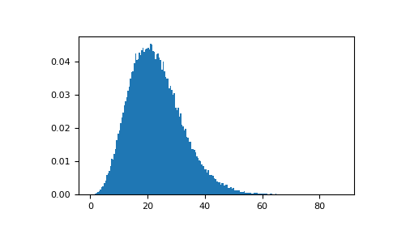
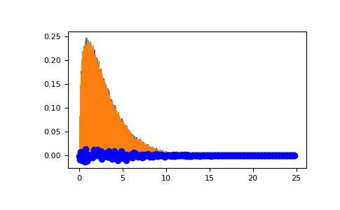

numpy.random.Generator.noncentral_chisquare¶
method
-
Generator.noncentral_chisquare(df, nonc, size=None)¶ Draw samples from a noncentral chi-square distribution.
The noncentral distribution is a generalization of the distribution.
Parameters: - df : float or array_like of floats
Degrees of freedom, must be > 0.
Changed in version 1.10.0: Earlier NumPy versions required dfnum > 1.
- nonc : float or array_like of floats
Non-centrality, must be non-negative.
- size : int or tuple of ints, optional
Output shape. If the given shape is, e.g.,
(m, n, k), thenm * n * ksamples are drawn. If size isNone(default), a single value is returned ifdfandnoncare both scalars. Otherwise,np.broadcast(df, nonc).sizesamples are drawn.
Returns: - out : ndarray or scalar
Drawn samples from the parameterized noncentral chi-square distribution.
Notes
The probability density function for the noncentral Chi-square distribution is
where
 is the Chi-square with q degrees of freedom.
is the Chi-square with q degrees of freedom.References
[1] Wikipedia, “Noncentral chi-squared distribution” https://en.wikipedia.org/wiki/Noncentral_chi-squared_distribution Examples
Draw values from the distribution and plot the histogram
>>> rng = np.random.default_rng() >>> import matplotlib.pyplot as plt >>> values = plt.hist(rng.noncentral_chisquare(3, 20, 100000), ... bins=200, density=True) >>> plt.show()
Draw values from a noncentral chisquare with very small noncentrality, and compare to a chisquare.
>>> plt.figure() >>> values = plt.hist(rng.noncentral_chisquare(3, .0000001, 100000), ... bins=np.arange(0., 25, .1), density=True) >>> values2 = plt.hist(rng.chisquare(3, 100000), ... bins=np.arange(0., 25, .1), density=True) >>> plt.plot(values[1][0:-1], values[0]-values2[0], 'ob') >>> plt.show()
Demonstrate how large values of non-centrality lead to a more symmetric distribution.
>>> plt.figure() >>> values = plt.hist(rng.noncentral_chisquare(3, 20, 100000), ... bins=200, density=True) >>> plt.show()